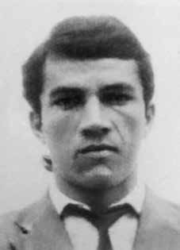

João
Mendes
Araújo
CIRCUNSTÂNCIAS DA MORTE
João Mendes Araújo foi morto por arma de fogo em um cerco de agentes do DOI do IV Exército a um “aparelho” de militantes da Ação Libertadora Nacional – ALN, na cidade de Olinda, em 25 de janeiro de 1972.
Relatório escrito pelo delegado Redivaldo Oliveira Acioly, da Delegacia de Segurança Social de Pernambuco, em 19 de janeiro de 1973, descreveu as circunstâncias de morte de João Mendes Araújo e as ações de repressão aos membros da Ação Libertadora Nacional no Estado. De acordo com o delegado, João Mendes Araújo havia fugido de agentes de segurança no dia 21 de janeiro de 1972 e nessa ocasião levado um tiro na coxa esquerda.
Ferido, João Mendes abrigou-se na casa de companheiros para se recuperar. Essa casa, definida pelos órgãos de segurança como um “aparelho” da Ação Libertadora Nacional (ALN), foi cercada por policiais e agentes do DOI do IV Exército no dia 24 de janeiro de 1972, ocasião em que João foi morto e seus companheiros presos, segundo o relato do delegado Acioly:
“No ‘estouro’, do ‘aparelho’ situado na Av. José Augusto Moreira, 740, apto 5, Casa Caiada, em Olinda, neste Estado, no dia 24 de janeiro de 1972 os agentes do DOI do IV Ex., ao se aproximarem foram recebidos à bala havendo, então, respondido ao fogo, tendo sido presos, na ocasião JOSÉ CALIXTRATO CARDOSO FILHO, MARIA DE LOURDES DA SILVA e MARLUCE GOMES DA SILVA, enquanto JOÃO MENDES DE ARAUJO “PAULO” e “JOÃO”, perdera a vida no choque com os agentes de segurança”.
Mesmo ferido, João Mendes Araújo teria oferecido “resistência aos agentes de segurança, no ‘aparelho’ de Olinda, culminando com a sua morte, cujo cadáver foi encontrado à margem direita da Av. Beira Mar, em frente ao prédio 1401, no Bairro Novo, em Olinda”. Essa versão oficial foi reproduzida nos Relatórios das Forças Armadas entregues ao então Ministro da Justiça, Maurício Correa, em dezembro de 1993.
Segundo o Relatório do Ministério da Marinha, João Mendes, em janeiro de 1972: “[…] Foi ferido quando se escondia em um aparelho da ALN, em Recife/PE. Mesmo ferido a tiros pelos agentes de segurança, conseguiu evadir-se lançando-se ao mar. Posteriormente, seu corpo foi achado e resgatado do mar”. O Relatório do Ministério da Aeronáutica registrou que “JOAO MENDES ARAUJO – Faleceu no dia 24 Jan 72, quando se escondia num „aparelho‟ da ALN em Recife/PE, resistiu à prisão, sendo ferido juntamente com outro terrorista que foi preso. Mesmo gravemente atingido, evadiu-se, lançando-se ao mar. Posteriormente, seu corpo foi resgatado do mar”.
Depoimento de José Calistrato Cardoso Filho, também militante da ALN, preso na ocasião da morte de João Mendes Araújo, em testemunho prestado à CEMVDHC no dia 13 de dezembro de 2012, descreveu as circunstâncias da sua prisão e da morte de João Mendes Araújo e afirmou que o óbito do militante ocorreu em 24 de janeiro de 1972, quando o aparelho em que estavam foi cercado por agentes dos órgãos de segurança:
“Eu fui preso no dia 24 de janeiro de 1972. Me despedi de Arnaldo Cardoso da Rocha, aqui na Ponte Duarte Coelho. Ele viajou para Havana e eu fiquei no Recife. E é nesse 24 de janeiro de 72 que morre João Mendes de Araújo que estava comigo. É um companheiro que era do interior de Pernambuco e foi mandado do Rio de Janeiro para se incorporar ao grupo da ALN daqui, entendeu? Então houve um tiroteio, a gente estava cercado, a gente estava com um pessoal que seria mandado daqui para Fortaleza, entendeu? Combinei com Arnaldo, antes dele sair, que tinha que sair do país para voltar logo que a gente ia tirar os companheiros que estavam muito queimados. O João Mendes de Araújo estava no nosso aparelho, no meu aparelho, estava baleado, estava se tratando lá e quando se deu o cerco assim, aproximadamente uma hora da tarde, aí houve um tiroteio … eu vi, eu pedi a João Mendes: ‘Fique na porta de trás’, era num edifício, mas a gente tinha um aparelho no térreo. Eu digo: “Fique na porta de trás, que eu vou ficar aqui na frente”. Fiquei na frente trocando tiro mesmo. Eles atiravam, a gente atirava. Vi o Luiz Miranda nesse cerco porque eu conhecia ele de vista; na época a gente sempre fazia um esforço para conhecer essas figuras. Era figura possível de ser justiçada pelo trabalho que eles faziam. E eu vi, já com uns dez minutos depois, tinham duas moças que iam viajar para Fortaleza, eu pedi para que elas saíssem por trás, e que o João Mendes desse cobertura na saída delas. Porque na realidade eu via muitos policiais, mas eles não… eles estavam de longe. Eles viram que a gente estava disposto a resistir, a gente não ia se entregar fácil. Acontece que eu também vi quando o João Mendes foi metralhado… Eu não sei se ele foi metralhado, se foi de metralhadora ou foi de fuzil, aqui é… correu sangue. Ele virou para mim e eu vi que ele estava desfalecendo, estava branco coisa e tal. Daí surgiu uma história de que ele pulou e foi para dentro do mar. Eu acho que ele saiu, que ele deve ter saído. Mas eu fui para frente da casa onde eu resistia. Acontece que quando João Mendes deixou de atirar, eu vi que eu tinha que sair. E saí, saí atirando e entrei num carro e se o carro tivesse pegado, eu tinha ido embora. E era um cerco e depois eu vim saber que era muito grande. Quando eu estava no DOICODI, pelo que se falava lá, era um cerco extraordinário. Vi também que estava baleado, estava com um tiro na mão, nos braços, ainda tem as marcas aqui, estava com um tiro na cabeça e, ao todo, eu já estava com cinco tiros no corpo. Isso eu soube lá… eu não sabia, não senti dor, não. Acontece que o carro não pegou e eu não ia morrer dentro do carro. Pulei fora e comecei a resistir no meio da areia, era um areal. O cara acertou um tiro no meu braço e até a pistola caiu. E terminou me agarrando. Pularam em cima de mim e me pegaram mesmo. Esse negócio você pode resistir, mas mesmo resistindo, você pode cair vivo. E era uma decisão de uma grande parte do pessoal da ALN de, primeiro o seguinte, de não se entregar: uma questão de princípio. Não se entregar. E se possível morrer, mas não chegar ao DOI CODI para ser torturado. Nisso daí eles me pegaram e me jogaram dentro de uma Rural Willys e me levaram para a PE de Olinda, que fica muito próximo da rua onde a gente tinha um aparelho, que era na Getúlio Vargas. Me levaram para a polícia… para a PE de Olinda. Quando nós chegamos lá, que eles foram me tirando, o coronel – eu estou dizendo coronel mais ou menos pelo galão que ele tinha, estava fardado, e disse que os caras tinham sido muito inábeis, seria dizer muito burro, aí eles disseram: ‘Volta e mata junto com o outro’. Ele já sabia que o João Mendes estava morto. Porque antes de me tirar do carro direito, ele vem e diz: ‘Volta para lá e mata junto com o outro’. […]
00:36:14 – NADJA BRAYNER: Eu estou te perguntando porque além dos casos que estamos examinando, dos desaparecidos, estamos também compondo esse quadro das organizações, do funcionamento delas para montar essa estrutura. A minha última pergunta é sobre ainda a lista, os nomes que tenho aqui da ALN, que eu comecei com Emilson, o João Mendes, você já esclareceu.
00:36:56 – JOSÉ CALISTRATO: Ele estava comigo.
00:37:01 – NADJA BRAYNER: Porque a versão oficial é que ele teria sido morto num tiroteio, isso é fato. Na ocasião da prisão ele trocou tiros com a polícia, foi atingido e foi morto nesse local em decorrência disso.
00:37:16 – JOSÉ CALISTRATO: É… era um companheiro que tava preparado para resistir a prisão.
00:37:19 – NADJA BRAYNER: Isso é importante para restaurar a verdade dos fatos. Bom, ele era agricultor, não é, o José Mendes?
00:37:28 – JOSÉ CALISTRATO: Era.
00:37:29 – NADJA BRAYNER: Ele chegou a desenvolver alguma atividade no campo, com a ALN?
00:37:33 – JOSÉ CALISTRATO: Ele é agricultor antes da ALN, entendeu? Quando eu recebi ele aqui para ingressar num grupo de ação que a gente preparava, ele já tava vindo do Rio de Janeiro.
00:37:46 – NADJA BRAYNER: Então, ele se profissionalizou no grupo, digamos assim, e ficou voltado só para essas atividades…
00:37:52 – JOSÉ CALISTRATO: Era um profissional da ALN”.
A certidão de óbito, de 19 de dezembro de 1978, consta no Prontuário individual de João Mendes, e a morte foi registrada como ocorrida no dia 25 de janeiro de 1972, na cidade de Olinda (PE), por ferimento de arma de fogo. Embora os órgãos de segurança soubessem a identidade de João Mendes Araújo, ele foi considerado desconhecido e sepultado no Cemitério de Santo Amaro, no Recife (PE).
A perícia tanatoscópica do Instituto de Medicina Legal de Pernambuco, de 27 de janeiro de 1972, registrou também como a data de óbito o dia 25 de janeiro de 1972. O corpo de João Mendes teria sido encontrado na praia de Olinda, e apresentava um ferimento recente de tiro, anterior à data da morte, já com curativo, o que comprova estar ferido no momento do confronto com os agentes dos órgãos de segurança.
De acordo com registro no documento: “Os ferimentos situados na coxa esquerda, encontravam-se no ato da necropsia, cobertos por gases e esparadrapos […]”. João Mendes Araújo é um dos casos investigados pela Comissão Estadual da Memória e Verdade Dom Helder Câmara (CEMVDHC).
João Mendes Araújo was killed by gunfire in a siege by DOI agents from the IV Army on a “device” of militants from Ação Libertadora Nacional – ALN, in the city of Olinda, on January 25, 1972.
Report written by delegate Redivaldo Oliveira Acioly, from the Pernambuco Social Security Department, on January 19, 1973, described the circumstances of João Mendes Araújo's death and the repression actions against members of the National Liberation Action in the State. According to the police chief, João Mendes Araújo had fled from security agents on January 21, 1972 and on that occasion was shot in the left thigh.
Injured, João Mendes took shelter in a companion's house to recover. This house, defined by security agencies as an “apparatus” of the National Liberation Action (ALN), was surrounded by police and DOI agents from the IV Army on January 24, 1972, when João was killed and his companions arrested, according to the report of delegate Acioly:
“In the ‘explosion’, of the ‘apparatus’ located at Av. José Augusto Moreira, 740, apt 5, Casa Caiada, in Olinda, in this State, on January 24, 1972, DOI agents from IV Ex., upon approaching, were shot at and then returned fire, having been arrested at the time JOSÉ CALIXTRATO CARDOSO FILHO, MARIA DE LOURDES DA SILVA and MARLUCE GOMES DA SILVA, while JOÃO MENDES DE ARAUJO “PAULO” and “JOÃO”, had lost his life in the clash with the security agents”.
Even though he was injured, João Mendes Araújo allegedly offered “resistance to the security agents, in the Olinda ‘apparatus’, culminating in his death, whose corpse was found on the right bank of Av. Beira Mar, in front of building 1401, in Bairro Novo, in Olinda”. This official version was reproduced in the Armed Forces Reports delivered to the then Minister of Justice, Maurício Correa, in December 1993.
According to the Report from the Ministry of the Navy, João Mendes, in January 1972: "[…] He was injured while hiding in an ALN device, in Recife/PE. Even though he was shot by security agents, he managed to escape by jumping into the sea. Subsequently, his body was found and rescued from the sea." The Report from the Ministry of Aeronautics recorded that “JOAO MENDES ARAUJO – He died on 24 Jan 72, when he was hiding in an ALN “apparatus” in Recife/PE, he resisted arrest, being injured along with another terrorist who was arrested. Even though he was seriously injured, he escaped, jumping into the sea. Subsequently, his body was rescued from the sea”.
Testimony from José Calistrato Cardoso Filho, also an ALN activist, arrested at the time of João Mendes Araújo's death, in a testimony given to CEMVDHC on December 13, 2012, he described the circumstances of his arrest and João Mendes Araújo's death and stated that the militant's death occurred on January 24, 1972, when the device they were in was surrounded by agents from the security agencies:
“I was arrested on January 24, 1972. I said goodbye to Arnaldo Cardoso da Rocha, here at Ponte Duarte Coelho. He traveled to Havana and I stayed in Recife. And it was on January 24, 72, that João Mendes de Araújo, who was with me, died. He's a comrade who was from the interior of Pernambuco and was sent from Rio de Janeiro to join the ALN group here, understand? So there was a shootout, we were surrounded, we were with people who were going to be sent from here to Fortaleza, understand? I agreed with Arnaldo, before he left, that I would have to leave the country and come back as soon as we could get our companions out who were badly burned. João Mendes de Araújo was on our device, on my device, he was shot, he was being treated there and when the siege took place, at approximately one o'clock in the afternoon, there was a shootout... I saw it, I asked João Mendes: ‘Stay at the back door’, it was in a building, but we had a device on the ground floor. I say: “Stay at the back door, I’ll stay at the front.” I was in front, exchanging shots. They shot, we shot. I saw Luiz Miranda at this siege because I knew him by sight; At the time we always made an effort to get to know these figures. It was possible to be judged for the work they did. And I saw, about ten minutes later, there were two girls who were going to travel to Fortaleza, I asked them to leave in the back, and for João Mendes to cover their exit. Because in reality I saw a lot of police, but they weren't... they were far away. They saw that we were willing to resist, we weren't going to give in easily. It turns out that I also saw when João Mendes was machine-gunned... I don't know if he was machine-gunned, with a machine gun or with a rifle, here it is... there was blood. He turned to me and I saw that he was fainting, he was white and stuff. Then a story emerged that he jumped and went into the sea. I think he left, that he must have left. But I went in front of the house where I resisted. It happened that when João Mendes stopped shooting, I saw that I had to leave. And I went out, I went out shooting and got into a car and if the car had started, I would have left. And it was a siege and later I found out that it was very big. When I was at DOICODI, from what was said there, it was an extraordinary siege. I also saw that he was shot, he had a shot in his hand, in his arms, there are still marks here, he had a shot in the head and, in total, I already had five shots in my body. I knew that… I didn't know, I didn't feel pain, no. Turns out the car didn't start and I wasn't going to die in the car. I jumped out and started to resist in the middle of the sand, it was a sandy beach. The guy shot me in the arm and even the pistol fell. And he ended up grabbing me. They jumped on me and really caught me. You can resist this thing, but even if you resist, you may fall alive. And it was a decision by a large part of the ALN personnel to, first of all, not to surrender: a matter of principle. Don't give in. And if possible, die, but not reach DOI CODI to be tortured. Then they caught me and threw me into a Rural Willys and took me to PE de Olinda, which is very close to the street where we had a device, which was on Getúlio Vargas. They took me to the police… to the PE of Olinda. When we got there, they were taking me away, the colonel – I'm saying colonel more or less because of the gallon he had, he was in uniform, and he said that the guys had been very unskillful, that would be saying very stupid, then they said: ‘Come back and kill with the other one’. He already knew that João Mendes was dead. Because before he takes me out of the car, he comes and says: ‘Go back there and kill with the other one’. […]
00:36:14 – NADJA BRAYNER: I'm asking you because in addition to the cases we are examining, the missing people, we are also composing this picture of organizations, of their functioning to set up this structure. My last question is about the list, the names I have here at ALN, which I started with Emilson, João Mendes, you already clarified.
00:36:56 – JOSÉ CALISTRATO: He was with me.
00:37:01 – NADJA BRAYNER: Because the official version is that he was killed in a shootout, that's a fact. At the time of his arrest, he exchanged gunfire with the police, was hit and killed there as a result.
00:37:16 – JOSÉ CALISTRATO: Yes… he was a companion who was prepared to resist arrest.
00:37:19 – NADJA BRAYNER: This is important to restore the truth of the facts. Well, he was a farmer, wasn't he, José Mendes?
00:37:28 – JOSÉ CALISTRATO: It was.
00:37:29 – NADJA BRAYNER: Did he develop any activity in the field, with the ALN?
00:37:33 – JOSÉ CALISTRATO: He was a farmer before ALN, understand? When I welcomed him here to join an action group that we were preparing, he was already coming from Rio de Janeiro.
00:37:46 – NADJA BRAYNER: So, he became a professional in the group, so to speak, and focused solely on these activities…
00:37:52 – JOSÉ CALISTRATO: He was an ALN professional”.
The death certificate, dated December 19, 1978, appears in João Mendes' individual medical record, and the death was recorded as having occurred on January 25, 1972, in the city of Olinda (PE), due to a gunshot wound. Although security agencies knew the identity of João Mendes Araújo, he was considered unknown and buried in the Santo Amaro Cemetery, in Recife (PE).
The thanatoscopic examination of the Institute of Legal Medicine of Pernambuco, on January 27, 1972, also recorded January 25, 1972 as the date of death. João Mendes' body was found on Olinda beach, and had a recent gunshot wound, prior to the date of death, already with a bandage, which proves that he was injured at the time of the confrontation with the agents of the security agencies.
According to the record in the document: “The wounds located on the left thigh, were found at the time of necropsy, covered by gas and bandages […]”. João Mendes Araújo is one of the cases investigated by the State Commission for Memory and Truth Dom Helder Câmara (CEMVDHC).
João Mendes Araújo fue asesinado a balazos en un asedio de agentes del DOI del IV Ejército a un “dispositivo” de militantes de la Acción Libertadora Nacional – ALN, en la ciudad de Olinda, el 25 de enero de 1972.
Informe redactado por el delegado Redivaldo Oliveira Acioly, de la Seguridad Social de Pernambuco, el 19 de enero de 1973, describió las circunstancias de la muerte de João Mendes Araújo y las acciones de represión contra miembros de la Acción de Liberación Nacional en el Estado. Según el jefe de policía, João Mendes Araújo había huido de agentes de seguridad el 21 de enero de 1972 y en esa ocasión recibió un disparo en el muslo izquierdo.
Herido, João Mendes se refugió en casa de un compañero para recuperarse. Esta casa, definida por los organismos de seguridad como un “aparato” de la Acción de Liberación Nacional (ALN), fue rodeada por policías y agentes del DOI del IV Ejército el 24 de enero de 1972, cuando João fue asesinado y sus compañeros arrestados, según el informe del delegado Acioly:
“En la ‘explosión’ del ‘aparato’ ubicado en Av. José Augusto Moreira, 740, apto 5, Casa Caiada, en Olinda, en este Estado, el 24 de enero de 1972, agentes del DOI del IV Ex., al acercarse, fueron tiroteados y luego respondieron, siendo detenidos en ese momento JOSÉ CALIXTRATO CARDOSO FILHO, MARIA DE LOURDES DA SILVA y MARLUCE GOMES DA SILVA, mientras que JOÃO MENDES DE ARAUJO “PAULO” y “JOÃO”, habían perdido la vida en el enfrentamiento con los agentes de seguridad”.
Aunque resultó herido, João Mendes Araújo habría ofrecido “resistencia a los agentes de seguridad, en el ‘aparato’ de Olinda, culminando con su muerte, cuyo cadáver fue encontrado en la margen derecha de la Av. Beira Mar, frente al edificio 1401, en el Bairro Novo, en Olinda”. Esta versión oficial fue reproducida en los Informes de las Fuerzas Armadas entregados al entonces Ministro de Justicia, Mauricio Correa, en diciembre de 1993.
Según Informe del Ministerio de Marina, João Mendes, de enero de 1972: "[…] Fue herido mientras se escondía en un dispositivo de la ALN, en Recife/PE. Aunque recibió disparos de agentes de seguridad, logró escapar saltando al mar. Posteriormente, su cuerpo fue encontrado y rescatado del mar". El Informe del Ministerio de Aeronáutica registra que "JOAO MENDES ARAUJO – Murió el 24 de enero de 72, cuando se encontraba escondido en un “aparato” del ALN en Recife/PE, resistió la detención, resultando herido junto con otro terrorista que fue detenido. Aunque resultó gravemente herido, escapó, saltando al mar. Posteriormente, su cuerpo fue rescatado del mar”.
Testimonio de José Calistrato Cardoso Filho, también militante de la ALN, detenido en el momento de la muerte de João Mendes Araújo, en testimonio prestado al CEMVDHC el 13 de diciembre de 2012, describió las circunstancias de su detención y de la muerte de João Mendes Araújo y afirmó que la muerte del militante ocurrió el 24 de enero de 1972, cuando el dispositivo en el que se encontraban fue rodeado por agentes de los organismos de seguridad:
“Fui detenido el 24 de enero de 1972. Me despedí de Arnaldo Cardoso da Rocha, aquí en Ponte Duarte Coelho. Él viajó a La Habana y yo me quedé en Recife. Y fue el 24 de enero del 72 que murió João Mendes de Araújo, que estaba conmigo. Es un compañero que era del interior de Pernambuco y fue enviado desde Río de Janeiro para integrarse aquí al grupo de la ALN, ¿entiendes? Entonces hubo un tiroteo, estábamos rodeados, estábamos con gente que iban a mandar de aquí a Fortaleza, ¿entiendes? Acordé con Arnaldo, antes de que se fuera, que tendría que salir del país y volver tan pronto como pudiéramos sacar a nuestros compañeros que estaban muy quemados. João Mendes de Araújo estaba en nuestro dispositivo, en mi dispositivo, le dispararon, estaba siendo atendido allí y cuando se produjo el asedio, aproximadamente a la una de la tarde, hubo un tiroteo... Lo vi, le pregunté a João Mendes: ‘Quédate en la puerta de atrás’, estaba en un edificio, pero teníamos un dispositivo en la planta baja. Yo digo: "Quédate en la puerta trasera, yo me quedaré en la puerta delantera". Yo estaba delante, intercambiando tiros. Ellos dispararon, nosotros disparamos. Vi a Luiz Miranda en este asedio porque lo conocía de vista; En su momento siempre nos esforzamos por conocer estas figuras. Era posible ser juzgados por el trabajo que hicieron. Y vi, como diez minutos después, que había dos chicas que iban a viajar a Fortaleza, les pedí que salieran atrás, y que João Mendes cubriera su salida. Porque en realidad vi muchos policías, pero no estaban... estaban lejos. Vieron que estábamos dispuestos a resistir, que no íbamos a ceder fácilmente. Resulta que también vi cuando a João Mendes lo ametrallaron... no sé si lo ametrallaron, con una ametralladora o con un rifle, aquí está... había sangre. Se volvió hacia mí y vi que se estaba desmayando, estaba blanco y esas cosas. Entonces surgió la historia de que saltó y se metió en el mar. Creo que se fue, que debió haberse ido. Pero me dirigí al frente de la casa donde resistí. Sucedió que cuando João Mendes dejó de disparar, vi que tenía que irme. Y salí, salí a disparar y me subí a un auto y si el auto hubiera arrancado, me hubiera ido. Y fue un asedio y después descubrí que era muy grande. Cuando estuve en DOICODI, por lo que allí se dijo, fue un asedio extraordinario. También vi que le dispararon, tenía un disparo en la mano, en los brazos, todavía hay marcas aquí, tenía un disparo en la cabeza y, en total, yo ya tenía cinco disparos en el cuerpo. Lo sabía… no lo sabía, no sentí dolor, no. Resulta que el auto no arrancó y yo no iba a morir en el auto. Salté y comencé a resistir en medio de la arena, era una playa de arena. El tipo me disparó en el brazo y hasta la pistola cayó. Y terminó agarrándome. Saltaron sobre mí y realmente me atraparon. Puedes resistirte a esto, pero incluso si te resistes, puedes caer vivo. Y fue una decisión de gran parte del personal de la ALN de, primero que nada, no rendirse: una cuestión de principios. No te rindas. Y si es posible, morir, pero no llegar al DOI CODI para ser torturado. Luego me agarraron y me metieron en un Willys Rural y me llevaron al PE de Olinda, que está muy cerca de la calle donde teníamos un dispositivo, que era en Getúlio Vargas. Me llevaron a la policía… al PE de Olinda. Cuando llegamos me estaban llevando, el coronel – digo coronel más o menos por el galón que tenía, estaba uniformado, y dijo que los muchachos habían sido muy torpes, eso sería decir muy tontos, entonces dijeron: “Vuelve y mata con el otro”. Ya sabía que João Mendes estaba muerto. Porque antes de sacarme del auto viene y me dice: 'Vuelve allí y mata con el otro'. […]
00:36:14 – NADJA BRAYNER: Se lo pregunto porque además de los casos que estamos examinando, las personas desaparecidas, también estamos componiendo esta imagen de las organizaciones, de su funcionamiento para establecer esta estructura. Mi última pregunta es sobre la lista, los nombres que tengo aquí en la ALN, que comencé con Emilson, João Mendes, ya me aclaraste.
00:36:56 – JOSÉ CALISTRATO: Él estaba conmigo.
00:37:01 – NADJA BRAYNER: Porque la versión oficial es que murió en un tiroteo, eso es un hecho. En el momento de su detención intercambió disparos con la policía, a consecuencia de lo cual fue atropellado y asesinado.
00:37:16 – JOSÉ CALISTRATO: Sí… era un compañero que estaba dispuesto a resistirse al arresto.
00:37:19 – NADJA BRAYNER: Esto es importante para restaurar la verdad de los hechos. Bueno, él era granjero, ¿no es así, José Mendes?
00:37:28 – JOSÉ CALISTRATO: Lo fue.
00:37:29 – NADJA BRAYNER: ¿Desarrolló alguna actividad en el campo, con la ALN?
00:37:33 – JOSÉ CALISTRATO: Él era campesino antes de ALN, ¿entiendes? Cuando lo recibí aquí para unirse a un grupo de acción que estábamos preparando, él ya venía de Río de Janeiro.
00:37:46 – NADJA BRAYNER: Entonces, se convirtió en un profesional en el grupo, por así decirlo, y se centró únicamente en estas actividades…
00:37:52 – JOSÉ CALISTRATO: Era un profesional de la ALN”.
El certificado de defunción, de 19 de diciembre de 1978, consta en el expediente médico individual de João Mendes, y la muerte fue registrada como ocurrida el 25 de enero de 1972, en la ciudad de Olinda (PE), por herida de bala. Aunque los organismos de seguridad conocían la identidad de João Mendes Araújo, fue considerado desconocido y enterrado en el cementerio de Santo Amaro, en Recife (PE).
El examen tanatoscópico realizado en el Instituto de Medicina Legal de Pernambuco, el 27 de enero de 1972, también registró como fecha de muerte el 25 de enero de 1972. El cuerpo de João Mendes fue encontrado en la playa de Olinda, y presentaba una herida de bala reciente, anterior a la fecha de la muerte, ya con un vendaje, lo que prueba que estaba herido en el momento del enfrentamiento con los agentes de los organismos de seguridad.
Según consta en el documento: “Las heridas localizadas en el muslo izquierdo, fueron encontradas al momento de la necropsia, cubiertas por gases y vendajes […]”. João Mendes Araújo es uno de los casos investigados por la Comisión Estatal para la Memoria y la Verdad Dom Helder Câmara (CEMVDHC).